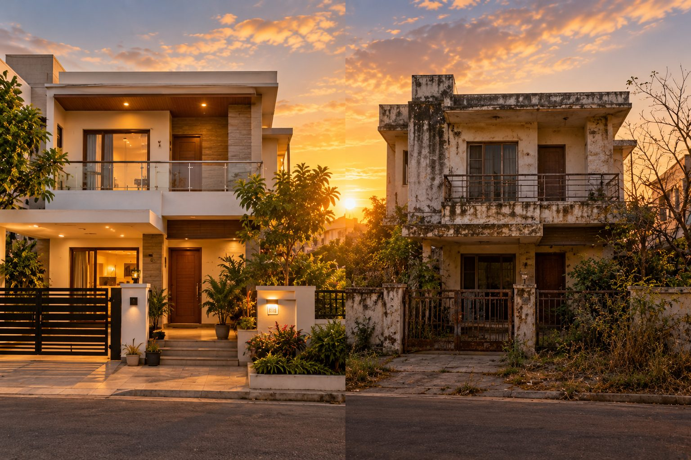

Nothing Stays the Same

The house I'm living in today is almost ten years old. Whenever someone visits for the first time, they're often surprised when I tell them its age. Many assume it's only a few years old. The reason is simple. Over the last ten years, it has been maintained well. Paint was refreshed when it needed to be. Things that were worn out were repaired. Small issues were attended to before they became bigger ones. I've also seen houses that are the same age. But they look much older. Not because they were built differently. Simply because they weren't maintained. That made me stop and think. Nothing stays good by itself.
Looking into my own mirror...
I realise the same is true of life. Relationships don't remain healthy by themselves. Skills don't remain sharp by themselves. Fitness doesn't remain by itself. Even passion quietly fades when it's neglected. Nothing valuable continues in the same condition without consistent care. Perhaps that's why decline rarely happens overnight.
It usually happens quietly...
through neglect.
Maybe the greatest danger isn't that something suddenly falls apart.
Maybe it's assuming that because it's good today...
it will remain that way tomorrow.
Without anyone taking care of it.
What in my life have I assumed will remain good... without my attention? What have I slowly stopped maintaining?
What small step can I take today...
before neglect quietly becomes decline?
What small step can I take today... before neglect quietly becomes decline?